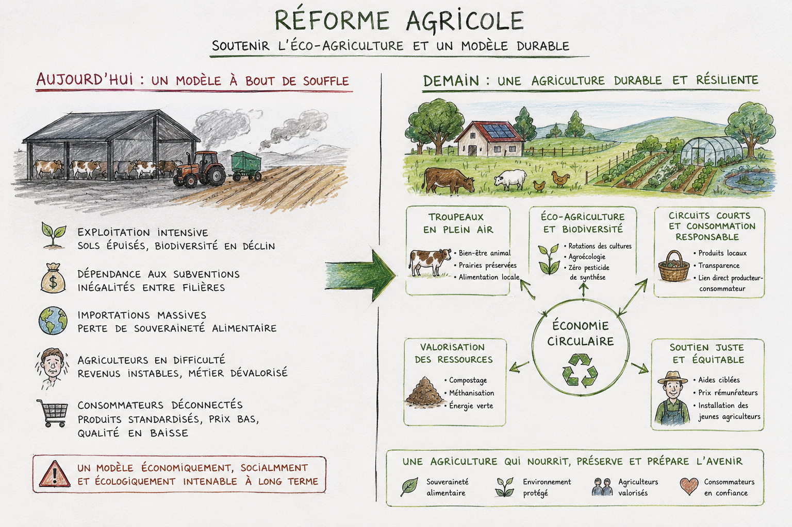
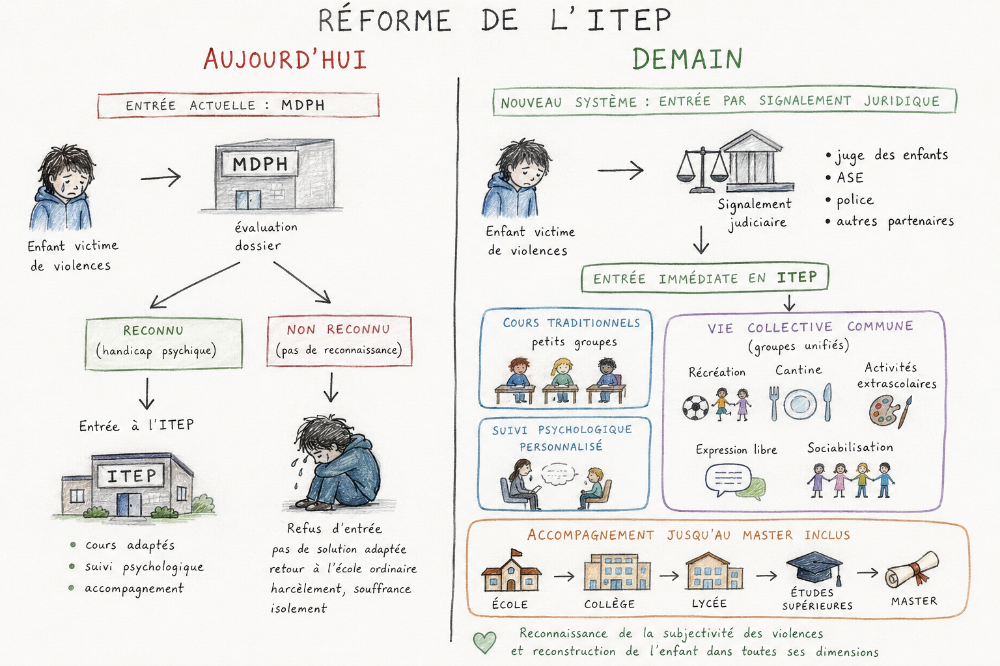
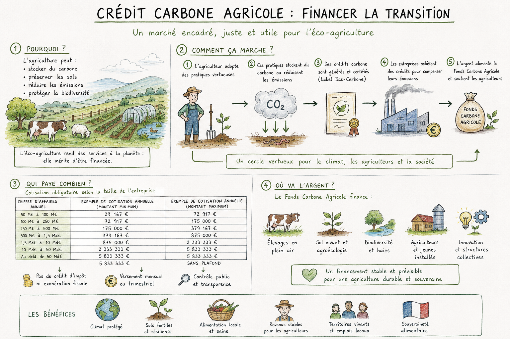

Agriculture, pourquoi un plancher plutôt qu'une autre approche
Le constat
L'agriculture française est traversée par de profondes inégalités de revenus entre filières. Sur la période 2010-2022, les revenus moyens annuels s'établissent à 20 200€ pour les bovins viande, 29 500€ pour les bovins lait et à seulement 13 100€ pour le maraîchage et l'horticulture, contre 56 100€ pour les céréaliers et 52 000€ pour les viticulteurs. Seulement 63% des maraîchers et 48% des horticulteurs bénéficient de subventions d'exploitation, contre la quasi-totalité des céréaliers. (Source : INRAE, Rica France 2010-2022 ; INSEE, Rica 2021)
Depuis 2023, la situation des céréaliers s'est elle-même dégradée : revenu moyen tombé à 16 400€/an sur 2015-2025 contre 28 200€/an sur 2005-2015, avec un résultat négatif trois années consécutives. (Source : Commission des comptes de l'agriculture, via WikiAgri et Horizons, 2026) Un groupe de référence qui s'effondre ne peut pas rester le pivot d'un mécanisme censé protéger les autres.
Les chemins envisagés
Chemin 1, laisser faire le marché. Prétendre que le marché se régulera à terme par le choix des consommateurs, sans intervention. Cette option a le mérite de la simplicité et ne coûte rien au budget public. Mais elle ignore que les inégalités décrites ci-dessus existent déjà depuis plus de dix ans sans que le marché ne les corrige seul, et qu'une famille d'éleveurs ne peut pas attendre une hypothétique correction de long terme pendant qu'elle vit sous le seuil de pauvreté aujourd'hui.
Chemin 2, le nivellement uniforme. Donner la même aide à toutes les filières, indépendamment de leur situation réelle. Cette option a le mérite de l'égalité de traitement apparente. Mais elle traite identiquement un céréalier en zone favorable et un éleveur de bovins viande dont le revenu est trois fois inférieur, ce qui ne corrige aucune des inégalités constatées, seulement leur habillage.

Le chemin choisi, et pourquoi
Le plancher est fixé à 4 675€ nets par mois, un montant établi à partir du revenu moyen des céréaliers sur la période 2010-2022, mais désormais indépendant de leur situation propre. Il garantit un revenu minimum à toutes les filières fragiles, céréaliers inclus si leur revenu venait à passer sous ce seuil. (Source : INRAE, Rica France 2010-2022, calcul LFP)
Ce chemin combine ce que les deux autres manquaient séparément : une intervention réelle plutôt qu'une confiance aveugle dans le marché, et une aide différenciée selon la situation de chaque filière plutôt qu'un nivellement uniforme. Ce n'est pas un compromis mou entre deux extrêmes, c'est une troisième direction construite pour répondre précisément à ce que le constat exigeait.
Sanctuaires médico-éducatifs, pourquoi ni l'école ordinaire ni la séparation totale
Le constat
Un enfant victime de violences, notamment sexuelles, se heurte aujourd'hui à un système qui n'est pas pensé pour lui. Rester dans le milieu scolaire ordinaire, même renforcé de psychologues, ne suffit pas à interrompre le harcèlement ni à offrir la rupture immédiate dont l'enfant a besoin. Le dispositif existant le plus proche d'une réponse adaptée, l'ITEP, n'est accessible qu'à travers une reconnaissance de handicap par la MDPH, une porte d'entrée inadaptée à l'urgence d'un enfant qui vient de subir des violences.
Les chemins envisagés
Chemin 1, ignorer la subjectivité du vécu. Réformer en ne gardant que le regard extérieur sur la gravité objective des violences, sans considérer que pour l'enfant, sur l'instant, il n'existe pas de hiérarchie de la souffrance tant qu'il n'a pas connu pire que ce qu'il a déjà subi. Cette approche réforme en surface sans régler les tensions réelles.
Chemin 2, catégoriser en masse selon la nature du traumatisme. Séparer systématiquement les enfants selon le type de violence subie, en perdant de vue que l'union autour de l'expérience commune d'avoir vu ses limites transgressées est elle-même un vecteur de reconstruction. Cette approche fragmente les consciences plutôt que de les rassembler.

Le chemin choisi, et pourquoi
La structure s'appuie sur le cadre juridique et financier déjà existant de l'ITEP, autorisation par l'Agence Régionale de Santé, financement intégral par l'Assurance Maladie, équipe pluridisciplinaire de psychologues, psychiatres, éducateurs spécialisés et enseignants formés. Les LFP y ajoutent une entrée spécifique, adaptée à l'urgence : signalement et protection judiciaire (juge des enfants, PJJ, ASE, procureur), pas la seule MDPH.
Ce n'est pas le type de violence qui rapproche les enfants entre eux, c'est l'expérience commune d'avoir vu ses propres limites transgressées, et le chemin de reconstruction qui s'ensuit. L'organisation reflète ce principe : cours et suivi psychologique en petits groupes différenciés selon les besoins, vie collective réunie pour tous, récréation, cantine, socialisation, activités partagées.
Cotisation carbone des entreprises, pourquoi une obligation progressive plutôt qu'un marché purement volontaire
Le constat
Le label carbone agricole a besoin d'un financement fiable pour tenir sa promesse, verser chaque mois la valeur des crédits certifiés dans le fonds mutualisé. Un marché purement volontaire, où chaque entreprise achète ou non selon son bon vouloir, expose le fonds à une sous-collecte chronique, rien n'oblige les grandes entreprises à participer à la hauteur de leur poids économique, pendant que celles qui jouent le jeu se sentent pénalisées face à celles qui ne le font pas.
Les chemins envisagés
Chemin 1, un marché entièrement volontaire, pour tous. Laisser chaque entreprise, petite ou grande, acheter des crédits carbone si elle le souhaite, sans aucune obligation. Cette option préserve la liberté d'entreprendre dans son ensemble, mais expose le fonds à une sous-collecte durable, rien ne garantit que les entreprises les plus grandes et les plus polluantes contribuent à la hauteur de ce qu'elles devraient.
Chemin 2, une cotisation fixe, identique pour toutes les entreprises assujetties. Imposer un même montant à toute entreprise dépassant un seuil donné. Cette option a le mérite de la simplicité, mais elle traite identiquement une ETI qui dépasse tout juste 50 millions de chiffre d'affaires et un groupe multinational au chiffre d'affaires cent fois supérieur, ce qui ne corrige aucune proportionnalité réelle.

Le chemin choisi, et pourquoi
Les PME conservent une totale liberté d'achat, aucun montant ne leur est imposé, ce qui protège les plus petites structures d'une charge qu'elles ne pourraient pas absorber. Les ETI et grandes entreprises, elles, sont soumises à une cotisation obligatoire et progressive, calculée sur leur chiffre d'affaires réel, avec un prix par tonne aligné sur le marché réel du Label Bas-Carbone plutôt que sur un montant arbitraire.
Ce chemin combine ce que les deux autres manquaient séparément : une obligation réelle qui garantit le financement du fonds, plutôt qu'une confiance aveugle dans la bonne volonté des entreprises, et une progressivité qui respecte la taille réelle de chacune, plutôt qu'un montant fixe qui traiterait identiquement une ETI moyenne et un groupe multinational.